Stack, Queue & Deque
Liting Zhang
University of West Florida
Outline
-
Stack: LIFO behavior, linked nodes, arrays, and resizing.
-
Queue: FIFO behavior, linked nodes, and circular arrays.
-
Deque: operations at both ends.
-
Complexity and common implementation mistakes.
ADT and implementation
-
The ADT defines what each operation means.
-
The implementation stores the items and maintains pointers or indices.
-
Track the state before and after each operation.
Stacks
Stack ADT
A stack inserts and removes items at the top.
LIFO: the last item added is the first item removed.
| Operation | Meaning |
|---|---|
push(x) |
Add x at the top |
pop() |
Remove the top item |
peek() |
Read the top item without removing it |
isEmpty() and size() |
Check whether it is empty and count its items |
In this implementation, pop() removes an item and returns no value.
Example: Push
Start with an empty stack.
-
push("mosquito")makes mosquito the top. -
push("fish")puts fish above mosquito. -
push("raccoon")puts raccoon above fish.
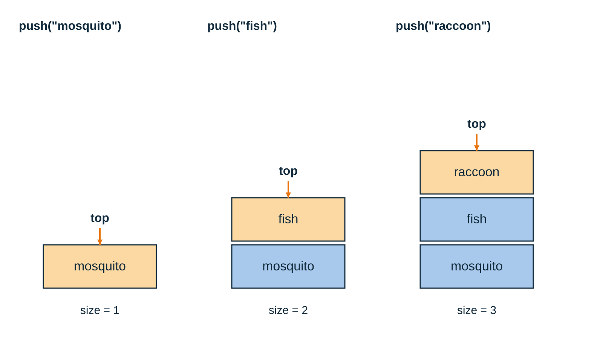
Example: Pop
The most recently pushed item leaves first.
-
The first
pop()removes raccoon. Fish becomes the top. -
The next
pop()removes fish. Mosquito becomes the top.
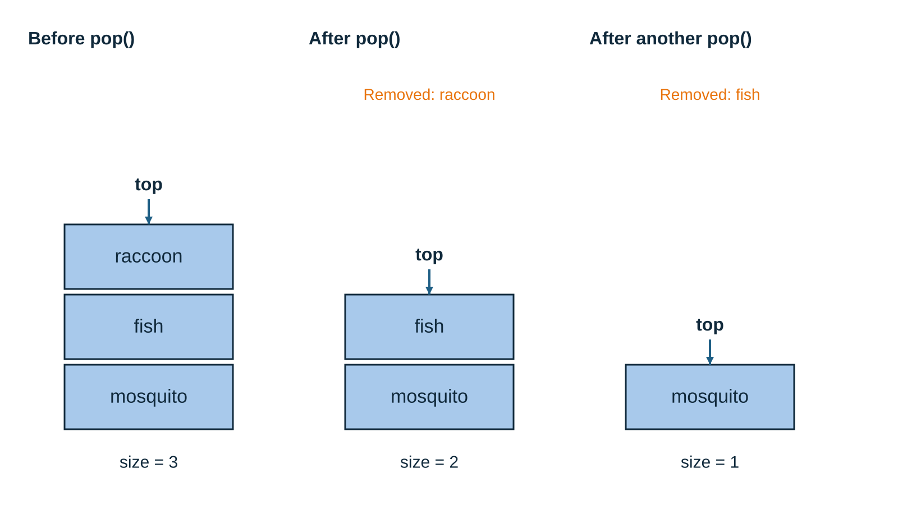
Peek and empty stacks
peek() reads the top item and leaves the stack unchanged.
-
With fish on top,
peek()reads fish andsize()stays 2. -
Call
isEmpty()before reading or removing the top. -
The stack code throws an exception for
peek()orpop()on an empty stack.
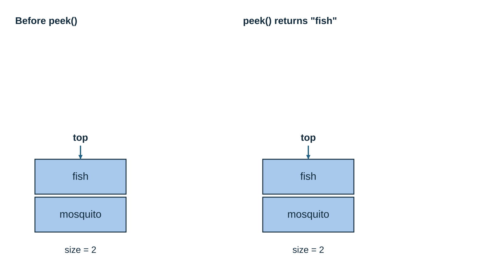
Two ways to implement a stack
The Stack ADT defines the operations and the LIFO rule.
Linked lists and arrays support the same operations:
| Implementation | Storage | Location of the top |
|---|---|---|
| 1. Linked list | One node per item | The first node |
| 2. Array | Items in consecutive cells | Index size - 1 |
Implementation 1: Linked-list stack
The list head is the stack top. Each node stores a value and its next link.
-
top == nullptrmeans the stack is empty. -
Push and pop change the first node, so no traversal is needed.
struct Node { T val; Node* next; };
Node* top = nullptr;
std::size_t size_ = 0;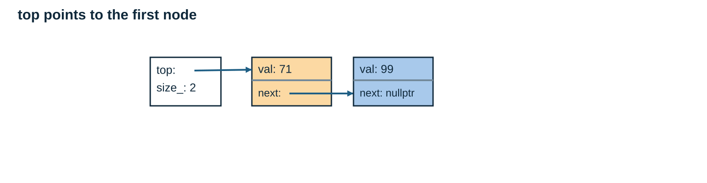
Linked-list stack: Push
Push prepends a new node to the list.
-
Create the node with its
nextpointing to the old top. -
Move
topto the new node and increasesize_.
template <typename T>
void Stack<T>::push(const T& x) {
Node* newNode = new Node{x, top};
top = newNode;
++size_;
}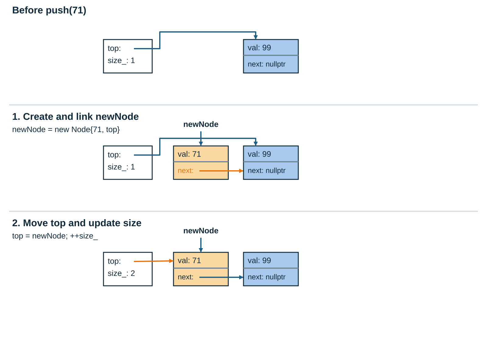
Linked-list stack: Pop
Pop removes the first node.
-
Save the old top, then advance
topto the next node. -
Delete the saved node and decrease
size_.
template <typename T>
void Stack<T>::pop() {
if (isEmpty())
throw std::runtime_error("empty stack");
Node* old = top;
top = top->next;
delete old;
--size_;
}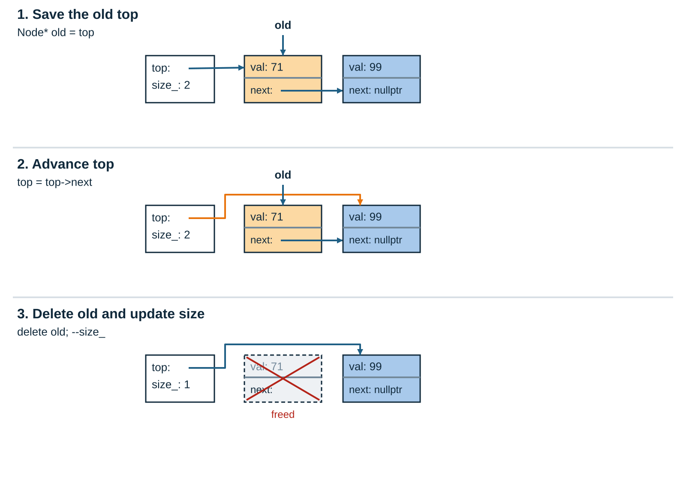
Linked-list stack: Empty cases
-
Pushing into an empty stack creates a node whose
nextisnullptr. -
Popping the only node sets
toptonullptr. -
The empty check prevents dereferencing
nullptr.
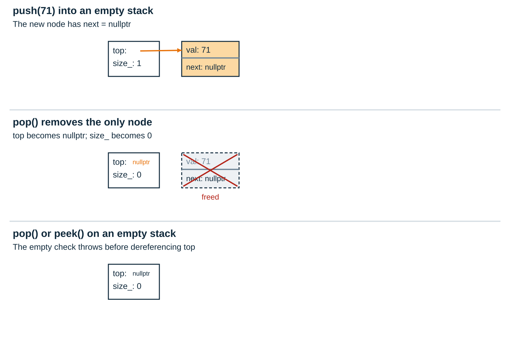
Linked-list stack: Peek
Read the value in the top node. The pointers and size do not change.
template <typename T>
T& Stack<T>::peek() {
if (isEmpty())
throw std::runtime_error("empty stack");
return top->val;
}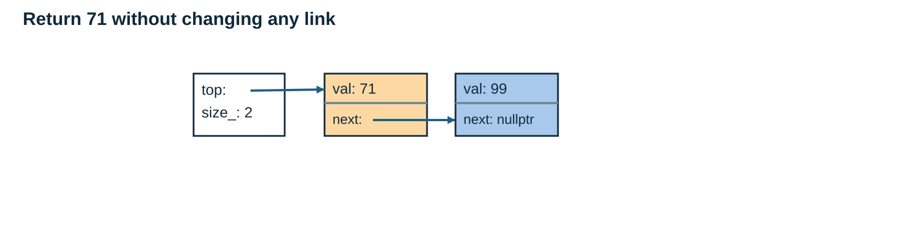
Linked-list stack: Destructor
Remove every node when the stack goes out of scope.
Each pop() frees one node. Cleaning up n nodes takes O(n).
template <typename T>
Stack<T>::~Stack() {
while (!isEmpty()) pop();
}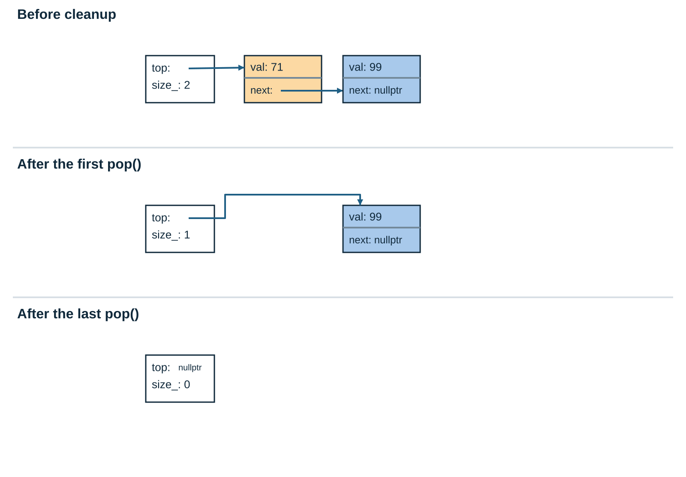
Implementation 2: Array stack
An array stack stores items in array cells instead of linked nodes.
The LIFO rule and the stack operations stay the same.
Linked list:
toppoints to the first node.Array:
size - 1identifies the top cell.Push and pop update the active size; no node links change.
Array stack: Storage
Active items occupy indices 0 through size - 1.
-
capacitycounts allocated slots. -
sizecounts active items. -
When
size > 0, the top item isarray[size - 1].
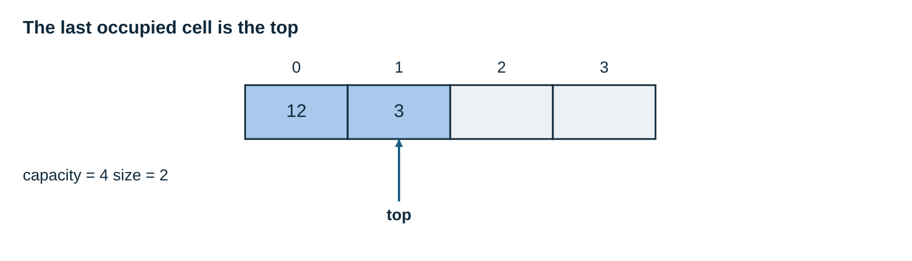
Array stack: Push
Write into the first unused slot, then increase the size.
Assume there is room for the new item.
array[size] = item;
++size;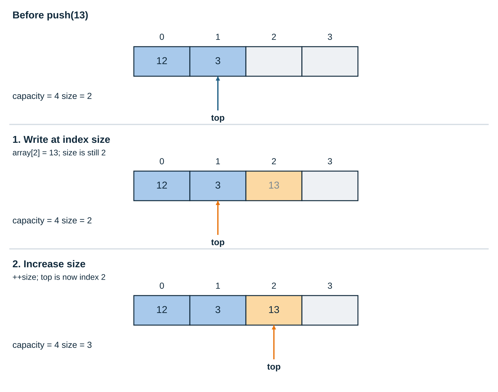
Array stack: Pop
Reduce the active range by one slot.
-
The previous top slot becomes unused.
-
The remaining elements stay in place.
-
For this integer array, the old slot value need not be erased.
if (size == 0)
throw std::runtime_error("empty stack");
--size;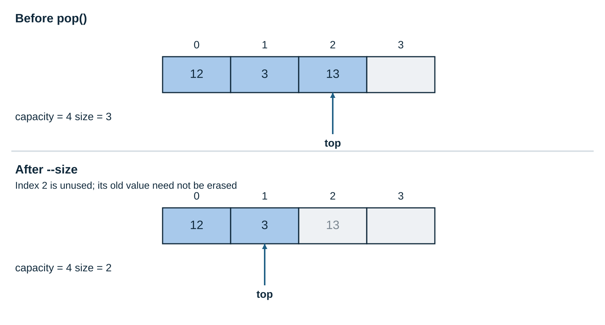
Array stack: Bounded size
A bounded stack has a maximum number of items.
-
When
size == maxCapacity, push fails. -
A rejected push leaves the contents and size unchanged.
-
The allocated array may grow until it reaches the maximum.
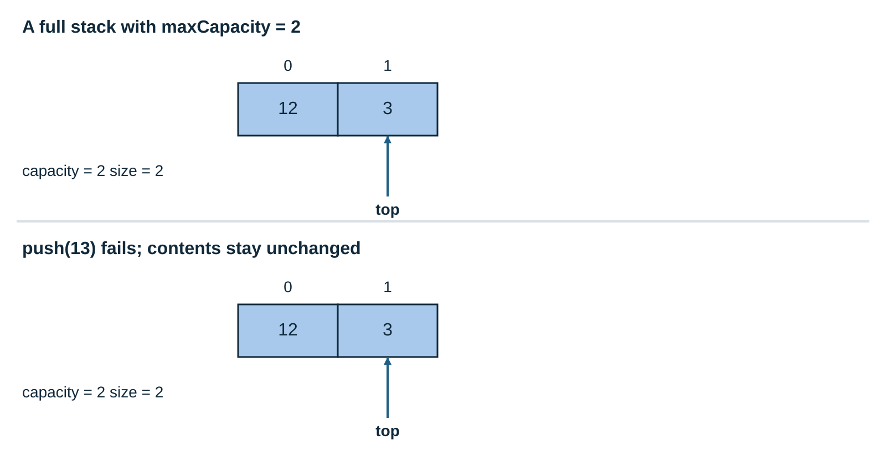
Array stack: Growing storage
An unbounded stack has no preset maximum number of items.
-
When the array is full, allocate a larger array.
-
Copy the active values, then insert the new item.
-
Memory availability still limits growth.
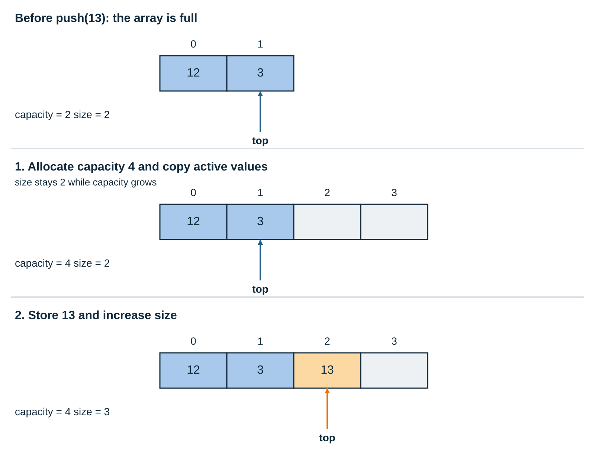
Array stack: Push with resizing
maxCapacity < 0 means there is no preset maximum.
Check the maximum first, grow when needed, then store the item.
bool push(int item) {
if (maxCapacity >= 0 && size == maxCapacity)
return false;
if (size == capacity) resize();
array[size] = item;
++size;
return true;
}Array stack: Resize
Double the capacity, respecting a configured maximum.
Growing from capacity zero starts with one slot.
void resize() {
int nextCapacity = std::max(1, 2 * capacity);
if (maxCapacity >= 0)
nextCapacity = std::min(nextCapacity, maxCapacity);
int* next = new int[nextCapacity];
for (int i = 0; i < size; ++i)
next[i] = array[i];
delete[] array;
array = next;
capacity = nextCapacity;
}Stack implementation comparison
| Operation or property | Array | Linked list |
|---|---|---|
| Push | O(1) amortized, O(n) when resizing | O(1) |
| Pop and peek | O(1) | O(1) |
| Storage | Contiguous, may have unused capacity | A next pointer in each node |
| Growth | Allocate and copy a larger array | Allocate one node |
The stack rules stay the same. The storage changes.
Practice: Stack operations
Start with an empty stack and perform:
push(8)
push(23)
peek()
pop()
push(4)-
What does
peek()read? -
Which item does
pop()remove? -
What are the final top and size?
Participation Activity
ZyBook: 8.2.3, 8.3.5, 8.3.10
Queues
Queue ADT
FIFO: the first item added is the first item removed.
Insert at the rear and remove from the front.
| Operation | Meaning |
|---|---|
enqueue(x) |
Add x at the rear |
dequeue() |
Remove and return the front item |
peek() |
Read the front without removing it |
isEmpty() and size() |
Check for empty and count items |
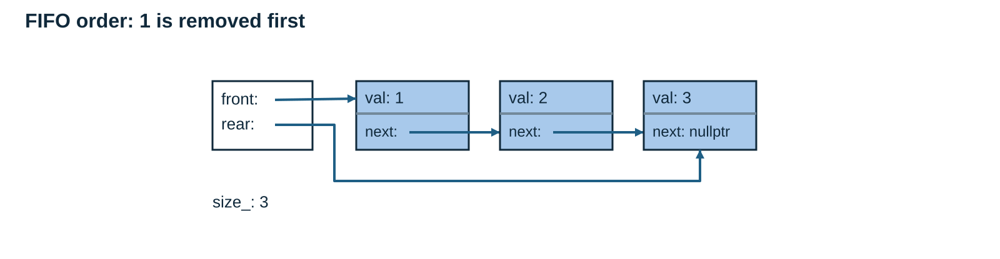
Two ways to implement a queue
The Queue ADT defines the operations and the FIFO rule.
Linked lists and arrays support the same operations:
| Implementation | Storage | State to track |
|---|---|---|
| 1. Linked list | One node per item | Front and rear pointers |
| 2. Array | Items in array cells | Indices and active size |
Implementation 1: Linked-list queue
Maintain a front pointer, a rear pointer, and an item count.
-
The front points to the oldest item.
-
The rear points to the newest item.
-
An empty queue has both pointers set to
nullptr.
struct Node { int val; Node* next; };
Node* front = nullptr;
Node* rear = nullptr;
std::size_t size_ = 0;Linked-list queue: Enqueue example
enqueue(4) adds a new node after the rear.
-
Connect the old rear to the new node.
-
Move the rear to the new node.
-
The front item stays the same.
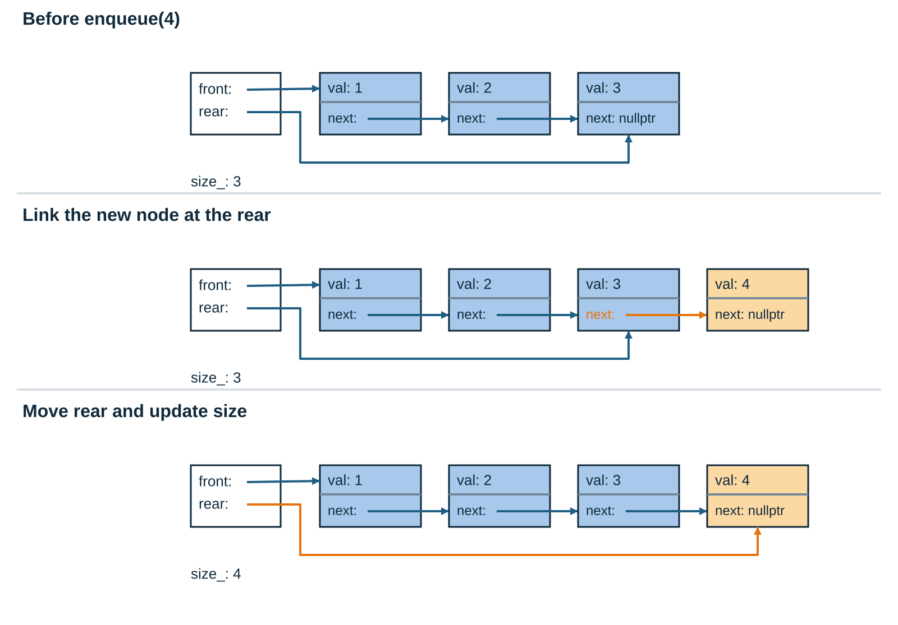
Linked-list queue: Dequeue example
dequeue() removes and returns the front value.
-
Save the first node.
-
Advance the front, then free the saved node.
-
The rear stays the same when other nodes remain.
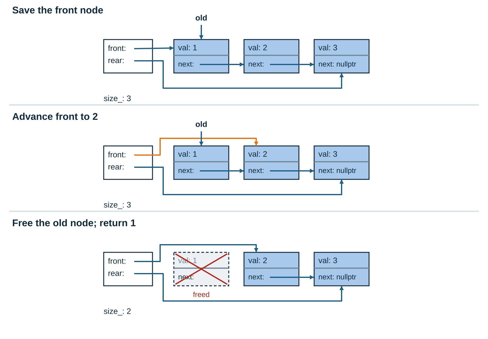
Linked-list queue: Enqueue
Link the new node at the rear. For an empty queue, it becomes the front too.
void Queue::enqueue(int x) {
Node* node = new Node{x, nullptr};
if (front == nullptr) front = node;
else rear->next = node;
rear = node;
++size_;
}Linked-list queue: Dequeue
Move the front forward. Clear the rear when the final node is removed.
int Queue::dequeue() {
if (front == nullptr)
throw std::runtime_error("empty queue");
Node* old = front;
int value = old->val;
front = front->next;
if (front == nullptr) rear = nullptr;
delete old;
--size_;
return value;
}Linked-list queue: Empty cases
-
Enqueue into an empty queue: front and rear point to the same new node.
-
Dequeue the only item: both pointers become
nullptr. -
The queue code throws an exception for dequeue or peek on an empty queue.
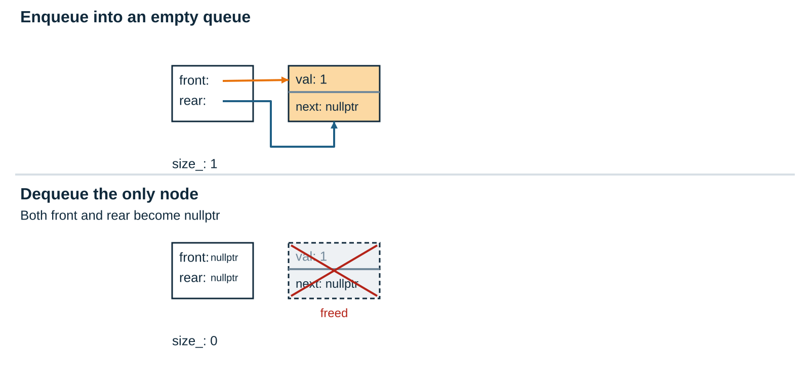
Implementation 2: Array queue
An array queue stores items in array cells instead of linked nodes.
The FIFO rule and the queue operations stay the same.
Linked list: move pointers and add or remove nodes.
Array: track occupied cells with indices and an active size.
Array designs include shifting items or using circular storage.
Array queue: Shifting storage
Keeping the front at index 0 makes dequeue expensive.
-
After removing the first value, shift the remaining values left.
-
Removing from a queue of n items takes O(n).
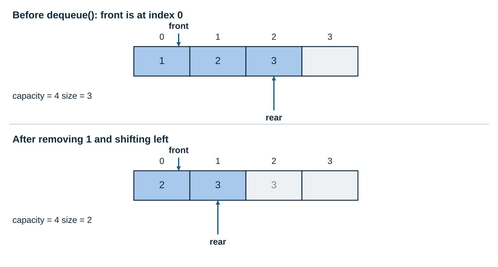
Array queue: Dequeue with shifting
Move each remaining active item one position to the left.
if (size == 0)
throw std::runtime_error("empty queue");
int value = array[0];
for (int i = 1; i < size; ++i)
array[i - 1] = array[i];
--size;
return value;Array queue: Circular storage
Keep a front index and wrap around the array.
-
The next insertion index is
(front + size) % capacity. -
Enqueue can use a slot at the beginning after reaching the end.
-
No active elements shift.
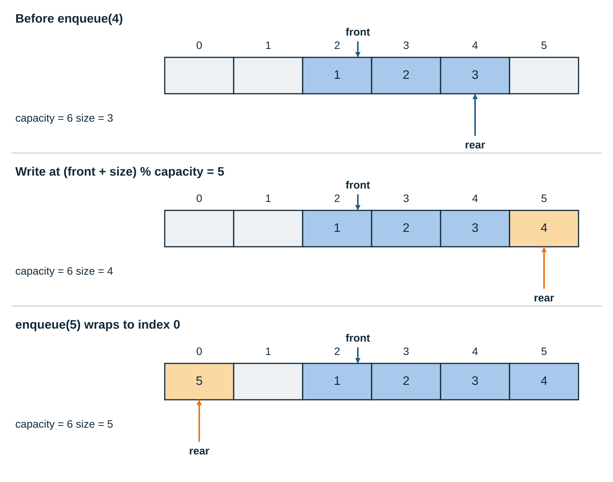
Array queue: Circular enqueue
Grow the array first if it is full, then compute the insertion index.
void enqueue(int x) {
if (size == capacity) resize();
int insertIndex = (front + size) % capacity;
array[insertIndex] = x;
++size;
}Array queue: Circular dequeue
Return the front value, advance the front index, and decrease the size.
int dequeue() {
if (size == 0)
throw std::runtime_error("empty queue");
int value = array[front];
front = (front + 1) % capacity;
--size;
return value;
}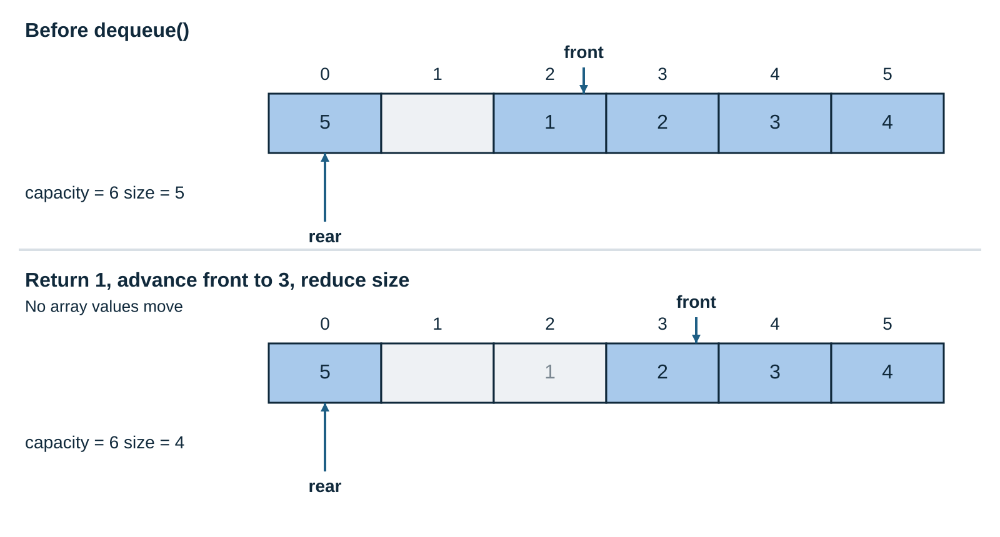
Array queue: Circular resizing
Copy active values in FIFO order into the new array.
-
Start reading at the old front and wrap when needed.
-
Place the first copied value at index 0.
-
Reset the front to 0 after copying.
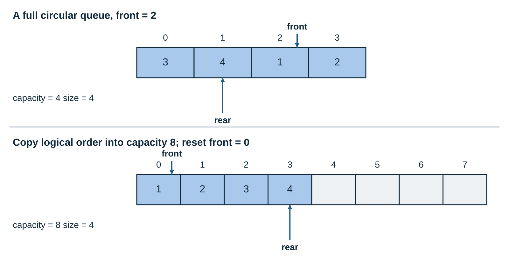
Array queue: Circular resize code
After copying, logical order becomes contiguous from index 0.
void resize() {
int nextCapacity = std::max(1, 2 * capacity);
int* next = new int[nextCapacity];
for (int i = 0; i < size; ++i)
next[i] = array[(front + i) % capacity];
delete[] array;
array = next;
capacity = nextCapacity;
front = 0;
}Array queue: Bounded and unbounded
-
A bounded queue rejects enqueue at its configured maximum size.
-
An unbounded array queue grows when its allocated array is full.
-
Check the maximum before resizing or writing a new item.
Queue implementation comparison
| Operation or property | Basic array | Circular array | Linked list |
|---|---|---|---|
| Enqueue | O(1) amortized | O(1) amortized | O(1) |
| Dequeue | O(n) shifting | O(1) | O(1) |
| Storage | Contiguous | Contiguous | A next pointer per node |
| Growth | Allocate and copy | Copy in FIFO order | Allocate one node |
Participation Activity
ZyBook: 8.5.2, 8.6.4, 8.6.8 (Q1, 3, 4, 5)
Deque
Deque operations
A deque inserts and removes items at both ends.
| Operation | Meaning |
|---|---|
push_front(x) |
Add at the front |
push_back(x) |
Add at the back |
pop_front() |
Remove at the front |
pop_back() |
Remove at the back |
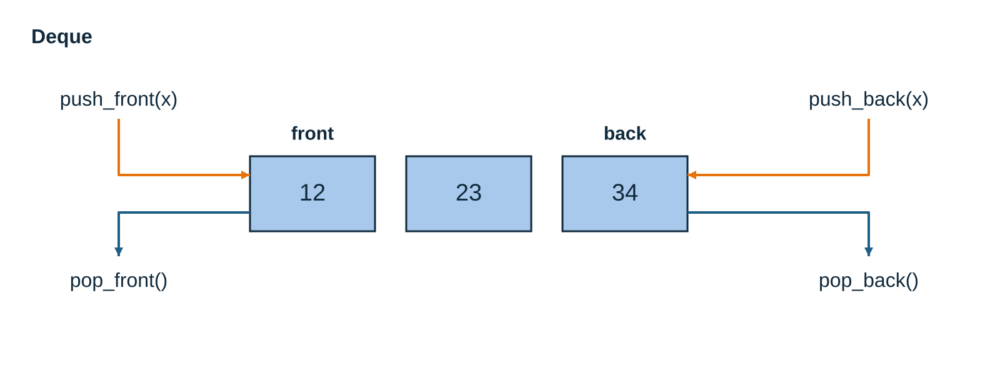
Deque implementations and uses
Common implementations include a doubly linked list and a circular array.
-
Palindrome checks compare the front and back.
-
Sliding-window algorithms can add and remove candidates at both ends.
Complexity and Common Mistakes
Typical time complexity
| Implementation | Insert | Remove | Peek |
|---|---|---|---|
| Linked stack | O(1) | O(1) | O(1) |
| Array stack | O(1) amortized | O(1) | O(1) |
| Linked queue | O(1) | O(1) | O(1) |
| Basic array queue | O(1) amortized | O(n) | O(1) |
| Circular array queue | O(1) amortized | O(1) | O(1) |
A growing array can take O(n) for a resize. A doubly linked deque handles either end in O(1).
Common pointer mistakes
-
Reading or removing an item before checking for empty.
-
For a linked queue, leaving rear pointing to a deleted final node.
-
Freeing a node before reading its value or next pointer.
-
Forgetting to delete a removed node.
Common array mistakes
-
Confusing allocated capacity with active size.
-
Computing a top item for an empty stack.
-
Using the wrong insertion index in a circular queue.
-
Copying physical array order instead of FIFO order during circular resizing.
Stack, Queue and Deque
| ADT | Insert | Remove |
|---|---|---|
| Stack | Top | Top |
| Queue | Rear | Front |
| Deque | Either end | Either end |
Choose the ordering rule first, then choose the implementation.
Reference Code
Reference: Stack class
Include <cstddef> and <stdexcept>.
Copying is disabled because the stack owns its nodes.
template <typename T>
class Stack {
struct Node { T val; Node* next; };
Node* top = nullptr;
std::size_t size_ = 0;
public:
Stack() = default;
~Stack();
Stack(const Stack&) = delete;
Stack& operator=(const Stack&) = delete;Reference: Stack interface
Public operations of the Stack class.
void push(const T& x);
void pop();
T& peek();
const T& peek() const;
bool isEmpty() const { return top == nullptr; }
std::size_t size() const { return size_; }
};Reference: Const peek
Read the top through a const stack.
template <typename T>
const T& Stack<T>::peek() const {
if (isEmpty())
throw std::runtime_error("empty stack");
return top->val;
}Reference: Queue class
The queue owns its nodes, so copying is disabled.
class Queue {
struct Node { int val; Node* next; };
Node* front = nullptr;
Node* rear = nullptr;
std::size_t size_ = 0;
public:
Queue() = default;
~Queue() { while (!isEmpty()) dequeue(); }
Queue(const Queue&) = delete;
Queue& operator=(const Queue&) = delete;Reference: Queue interface
Public operations of the Queue class.
void enqueue(int x);
int dequeue();
int peek() const {
if (isEmpty()) throw std::runtime_error("empty queue");
return front->val;
}
bool isEmpty() const { return front == nullptr; }
std::size_t size() const { return size_; }
};